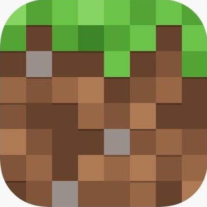
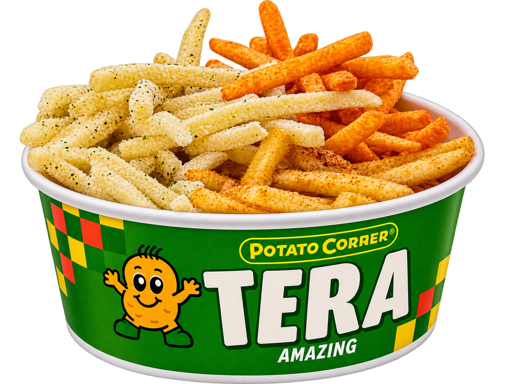

01 / COMPETITIVE
Valorant
Competitive rounds, close calls, and the matches that keep me trying again.
04 / MY PERSONAL PICKS
Everyone has those things they never seem to get tired of. For me, it's a mix of games, music, stories, and food. Here's a closer look at some of my personal favorites.
Explore my favoritesA LITTLE BIT OF EVERYTHING
Four different categories, each with a special place in my everyday life.
From competitive matches to exploring worlds with friends.
Discover my games ↗ 02 / LISTEN♫Songs, artists, and sounds that match whatever mood I'm in.
Explore my music ↗ 03 / READ & WATCH✦Manhwa, anime, and movies that keep me interested.
See my favorites ↗ 04 / CRAVE✳The snacks, meals, and sweet treats I always enjoy.
Check my cravings ↗01 / PRESS START
Four games I enjoy for different reasons, each with its own kind of adventure.
Competitive rounds, close calls, and the matches that keep me trying again.

Building, discovering, and making memories in a world that never seems to end.
Different experiences to explore, especially when friends are joining in.
A combination of music, timing, and concentration I keep coming back to.
02 / ON REPEAT
No fixed genre. Hover over a song card to reveal its Spotify player. On touchscreens, the players are always visible.
IV OF SPADES
Green Day
gins&melodies feat. Hev Abi
Daniel Caesar
“No fixed genre. Just good music.”
03 / ONE MORE CHAPTER
From manhwa covers to anime and movie posters, these are some worlds that catch my attention.
04 / ALWAYS HUNGRY
From savory snacks to sweet treats, these are a few things I always crave.
My go-to snack that I almost never turn down.

Because fries are good at pretty much any time.

Something filling, flavorful, and always satisfying.

There is always a little room left for dessert.
“Sometimes, I feel like there's a black hole in my stomach.”
KEEP EXPLORING
These favorites are only one part of who I am. Take a look at the memories I've collected and the goals I'm working toward.